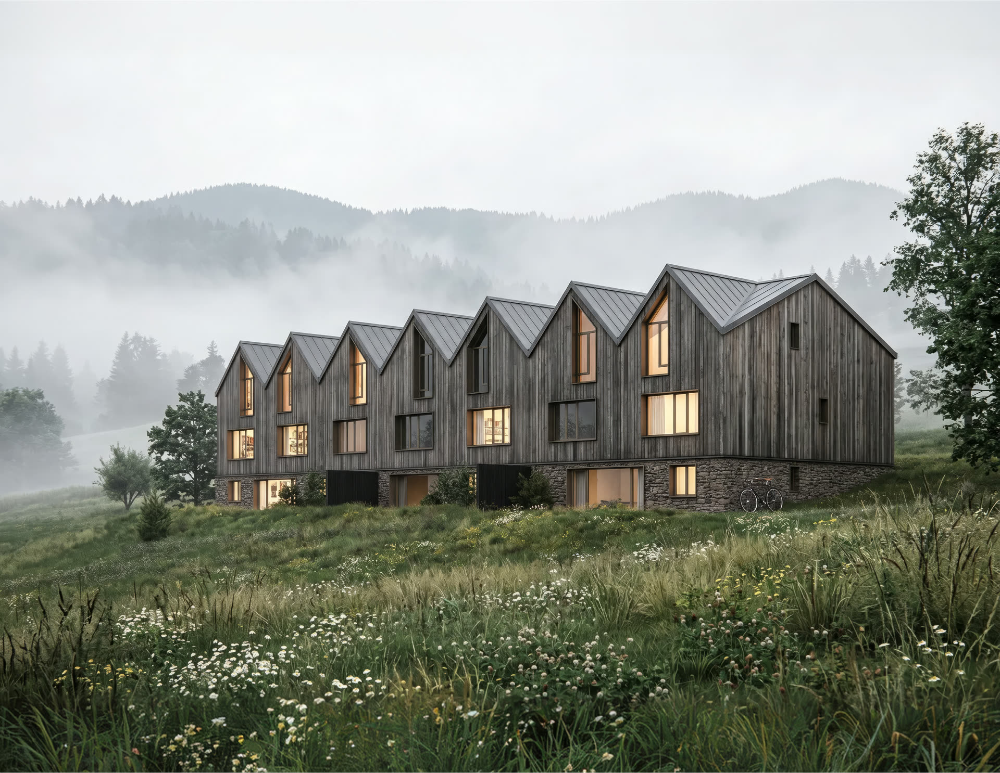
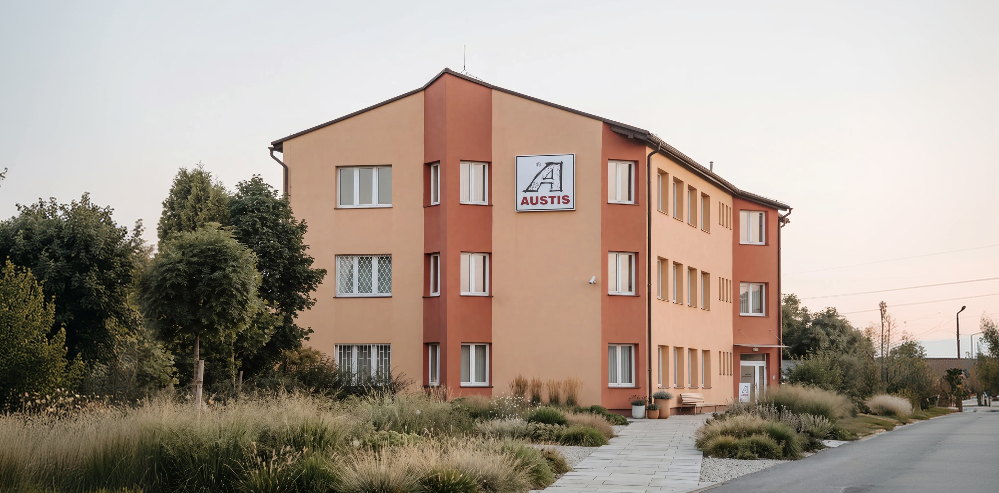

Jeden smluvní partner
Celou stavbu zastřešuje jedna smlouva a jeden tým. Odpovědnost za výsledek neseme my od přípravy po předání.

Koordinujeme profese, hlídáme termíny i kvalitu. Vy jednáte s jedním partnerem a o každé fázi stavby máte jasný přehled.
Celou stavbu zastřešuje jedna smlouva a jeden tým. Odpovědnost za výsledek neseme my od přípravy po předání.
Plánujeme návaznosti profesí a hlídáme klíčové milníky, aby stavba postupovala bez zbytečných prostojů.
Rozpočet sledujeme průběžně a na odchylky upozorníme včas. Žádná překvapení na konci projektu.
Pracujeme se stabilní sítí prověřených firem. Subdodavatele vybíráme, řídíme i kontrolujeme my.
V pravidelných reportech vidíte stav prací, čerpání rozpočtu i rizika, kdykoli je potřebujete.

Jedna smlouva a jeden odpovědný partner pro celou stavbu, od výběru subdodavatelů po předání klíčů.

Novostavby rezidenčních, komerčních i provozních objektů. Od hrubé stavby po technická zařízení budov.

Modernizace a přestavby stávajících objektů s respektem k technickému stavu, provozu i rozpočtu.

Stavíme a rekonstruujeme rezidenční, komerční i provozní objekty s jasnou odpovědností za výsledek.
Rozšiřujeme tým. Aktuálně hledáme stavbyvedoucí a výrobní přípravu staveb.
volné pozice
AUSTIS POZEMNÍ STAVBY
Generální dodavatel pro investory a developery. Celá stavba pod jednou smlouvou. Řídíme harmonogram, hlídáme rozpočet a ručíme za kvalitu od přípravy až po předání klíčů.
Koordinujeme profese, hlídáme termíny i kvalitu. Vy jednáte s jedním partnerem a o každé fázi stavby máte jasný přehled.
Celou stavbu zastřešuje jedna smlouva a jeden tým. Odpovědnost za výsledek neseme my od přípravy po předání.
Plánujeme návaznosti profesí a hlídáme klíčové milníky, aby stavba postupovala bez zbytečných prostojů.
Rozpočet sledujeme průběžně a na odchylky upozorníme včas. Žádná překvapení na konci projektu.
Pracujeme se stabilní sítí prověřených firem. Subdodavatele vybíráme, řídíme i kontrolujeme my.
V pravidelných reportech vidíte stav prací, čerpání rozpočtu i rizika, kdykoli je potřebujete.
Jedna smlouva a jeden odpovědný partner pro celou stavbu, od výběru subdodavatelů po předání klíčů.
Novostavby rezidenčních, komerčních i provozních objektů. Od hrubé stavby po technická zařízení budov.
Modernizace a přestavby stávajících objektů s respektem k technickému stavu, provozu i rozpočtu.
Stavíme a rekonstruujeme rezidenční, komerční i provozní objekty s jasnou odpovědností za výsledek.
Rozšiřujeme tým. Aktuálně hledáme stavbyvedoucí a výrobní přípravu staveb.
volné pozice.jpg)
 AUSTIS Pozemní stavby s.r.o
AUSTIS Pozemní stavby s.r.o